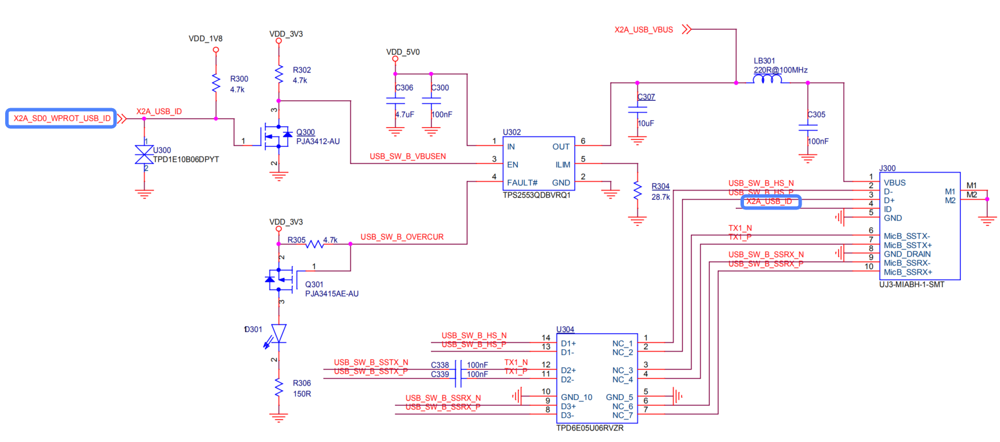

4.3.18.1. USB开发指南
引言
概述
本文主要介绍x3m, x3e, j3等芯片usb2.0/3.0控制器和物理层的特性, USB硬件电路, Linux平台驱动开发和调试方法, 以及其他一些参考信息等。
特性
1个usb控制器, 选用新思科技的dwc3控制器和phy, 控制器为dwc3 3.30b版本。
支持usb2.0(480Mbps), usb3.0(5Gbps)等速率。
支持作为host, device或者drd静态双角色装置。
主机兼容xhci标准。
可通过指定gpio管脚(65: sd0_wrp)实现otg功能。即可通过id_pin电平来自动切换主从模式。(* 相当于otg-like装置, 可自动切换主从模式, 但不支持HNP, SRP等otg的标准协议。)
bootrom支持U盘启动功能。
支持Link Power Management(LPM)协议, 在传输过程中可以进入U1, U2等状态省电。
作为设备, 总共有9个端点(包括ep0), 其中7个可以作为对应function的端点。
支持内部DMA, 并且支持scatter/gather功能。
硬件
参考板硬件主要有DVB(参考大板)， SDB(生态小板)等形态。
DVB开发板:
SDB生态板:
硬件设计主要涉及供电, vbus, id pin, 数据线, hub, switch等模块。
以下主要以DVB做为例子, 做一些描述, 供参考。
供电
芯片内usb控制器和phy主要是3路供电,
VDD_USB - 0.8v 数字部分
VDD_USB_VP - 0.8v 数字部分
VDD_USB_VPH - 3.3v 模拟部分(如phy)
*注1, dvb开发板目前仅0.8v供电可通过pmic可控制掉电, 3.3v无法掉电.
客户实际板子可分别控制, 针对休眠唤醒功能可以省更多电。(3.3v电掉电的休眠唤醒方案得调试.)
*注2, DVB开发板使用的是PMIC芯片进行对应管脚的控制, 驱动需要使用对应的regulator驱动进行控制。 故客户如果采用的不是和DVB一样的方案, 如如果采用其他PMIC, 其他管脚, 或者DCDC接插件等, 需要在设备树中正确配置。 否则会遇到usb无法使用的情况, 最常见的是-110各种超时错误。
该类问题会在后续的FAQ文档中涉及。
vbus
作为主机
vbus是向外给接入的设备供电, dvb开发板直接由外围电路直接控制.
例如,
micro-ab口的vbus和usb id管脚相关联, 即usb_id管脚拉低, 是一根otg线材时, > > 就会开启vbus供电。
而对于另一路通过hub扩展出来的2个type-a口, 则是通过拨码开关, 控制选择该通道后, 使能该通道的vbus供电。
总之, 作为主机, vbus供电可以由外围电路设计完成, 芯片可以添加一些管脚控制, 也可以完全由外围电路控制。
具体设计取决于客户自己的硬件设计。
作为设备
x3可以作为自供电, vbus供电或者混合/电池供电的设备。但vbus还是需要接近芯片内部, 作为热插拔行为的判断。
由于芯片改动usb phy的vbus管脚不出球了， 故需要根据硬件勘误手册描述, 将vbus接入x3一根gpio管脚, 作为热插拔行为的识别。
具体参考硬件文档的:
软件patch可参考:
usb id管脚
x3系列芯片, 选用的dwc3控制器是一个drd (dual role device), 即静态双角色的控制器,
并非真正的otg控制器。故x3系列芯片能实现的是otg-like的功能, 即可以通过usb id管脚的电平高低, 软件/驱动来做控制器的角色切换。简单来说, 即
usb_id 低电平 - 主机模式
usb_id 高电平 - 设备模式

驱动: 使用的extcon-usb-gpio驱动, 源码请参考drivers/extcon/extcon-usb-gpio.c
内核配置相关
Linux为4.14.** 长期支持版本, 但其中usb部分已经更新到了5.12.**版本之后(截至2022年1月)。其中原因主要是为了解决usb isoc传输失败的问题。例如如下补丁:
[v5,0/3] usb: dwc3: Workaround isoc start_transfer failure - Patchwork (kernel.org)
usb的内核相关配置和标准的Linux内核配置方式一样, 都是采用menuconfig等界面进行配置。比如,
# 导入环境变量
source build/envsetup.sh
lunch 6 # xj3 debug版本
# debug版本
make CROSS_COMPILE=aarch64-linux-gnu- ARCH=arm64 xj3_debug_defconfig
make CROSS_COMPILE=aarch64-linux-gnu- ARCH=arm64 menuconfig
# release版本
make CROSS_COMPILE=aarch64-linux-gnu- ARCH=arm64 xj3_perf_defconfig
make CROSS_COMPILE=aarch64-linux-gnu- ARCH=arm64 menuconfig
也可以使用内核中的mk_kernel.sh脚本来进行更简便的配置
# 导入环境变量
source build/envsetup.sh
lunch 6 # xj3 debug版本
# debug版本
./mk_kernel.sh -M
# release版本
./mk_kernel.sh -P
# 根据需要修改相应配置项后可保存后, 并拷贝.config文件到arch/arm64/configs目录下对应的defconfig文件
主要配置项及常用开启的项目 大致如下: (高亮的是一些常见主要的配置项)
usb控制器, class驱动等
--- USB support
<*> Support for Host-side USB
[ ] USB announce new devices
*** Miscellaneous USB options ***
[*] Enable USB persist by default
[ ] Limit USB device initialization to only a few retries
[ ] Dynamic USB minor allocation
[*] OTG support
(2) Default autosuspend delay
< > USB Monitor
*** USB Host Controller Drivers ***
< > Cypress C67x00 HCD support
<*> xHCI HCD (USB 3.0) support
[ ] xHCI support for debug capability
< > Support for additional Renesas xHCI controller with firmware
-*- Generic xHCI driver for a platform device
......
[ ] HCD test mode support
*** USB Device Class drivers ***
< > USB Modem (CDC ACM) support
< > USB Printer support
< > USB Wireless Device Management support
< > USB Test and Measurement Class support
*** NOTE: USB_STORAGE depends on SCSI but BLK_DEV_SD may ***
*** also be needed; see USB_STORAGE Help for more info ***
<*> USB Mass Storage support
[ ] USB Mass Storage verbose debug
......
<*> USB Attached SCSI
......
<*> DesignWare USB3 DRD Core Support
DWC3 Mode Selection (Dual Role mode) --->
*** Platform Glue Driver Support ***
<*> Generic OF Simple Glue Layer
<M> Hobot DWC3 Extcon Vbus GPIO Detect Freature
< > DesignWare USB2 DRD Core Support
< > ChipIdea Highspeed Dual Role Controller
< > NXP ISP 1760/1761 support
*** USB port drivers ***
< > USB Serial Converter support ----
*** USB Miscellaneous drivers ***
< > USB testing driver
< > USB EHSET Test Fixture driver
< > USB Link Layer Test drive
USB Physical Layer drivers --->
<*> USB Gadget Support --->
usb gadget, function驱动等
作为设备, 传统的legacy驱动方式都较长时间不更新，大部分只能作为参考(如g_audio.ko, g_webcam.ko)
而比较常用的都是采用configfs/functionfs进行单一/复合设备的配置。
--- USB Gadget Support
[ ] Debugging messages (DEVELOPMENT)
[ ] Debugging information files (DEVELOPMENT)
[ ] Debugging information files in debugfs (DEVELOPMENT)
(2) Maximum VBUS Power usage (2-500 mA)
(8) Number of storage pipeline buffers
[ ] Serial gadget console support
USB Peripheral Controller --->
[*] Support Customer Specific Extension Unit Request
<M> USB Gadget functions configurable through configfs
[*] Generic serial bulk in/out
[*] Abstract Control Model (CDC ACM)
[ ] Object Exchange Model (CDC OBEX)
[ ] Network Control Model (CDC NCM)
[ ] Ethernet Control Model (CDC ECM)
[ ] Ethernet Control Model (CDC ECM) subset
[ ] RNDIS
[ ] Ethernet Emulation Model (EEM)
[*] Mass storage
[*] Loopback and sourcesink function (for testing)
[*] Function filesystem (FunctionFS)
[*] Audio Class 1.0
[ ] Audio Class 1.0 (legacy implementation)
[*] Audio Class 2.0
[ ] MIDI function
[*] HID function
[*] USB Webcam function
[ ] Printer function
USB Gadget precomposed configurations --->
<M> Gadget Zero (DEVELOPMENT)
[ ] HNP Test Device
<M> Audio Gadget
[ ] UAC 1.0
<M> Ethernet Gadget (with CDC Ethernet support)
[*] RNDIS support
[ ] Ethernet Emulation Model (EEM) support
< > Network Control Model (NCM) support
<M> Gadget Filesystem
<M> Function Filesystem
[*] Include configuration with CDC ECM (Ethernet)
[*] Include configuration with RNDIS (Ethernet)
[ ] Include 'pure' configuration
<M> Mass Storage Gadget
<M> Serial Gadget (with CDC ACM and CDC OBEX support)
< > MIDI Gadget
< > Printer Gadget
<M> CDC Composite Device (Ethernet and ACM)
<M> CDC Composite Device (ACM and mass storage)
<M> Multifunction Composite Gadget
[*] RNDIS + CDC Serial + Storage configuration
[*] CDC Ethernet + CDC Serial + Storage configuration
<M> HID Gadget
< > EHCI Debug Device Gadget
<M> USB Webcam Gadget
<M> Horbot bulk channel transfer support
< > USB Raw Gadget
otg功能相关
x3系列芯片采用的是dwc3 drd双角色控制器, 并不是标准的otg控制器。故实现的otg-like的主从角色切换驱动, 是基于gpio中断的驱动代码。
代码路径为: drivers/extcon/extcon-usb-gpio.c
内核配置路径为
Device Drivers --->
<*> External Connector Class (extcon) support --->
<*> USB GPIO extcon support
设备树配置相关
和usb相关的配置主要集中在hobot-xj3.dtsi等文件中。
包括驱动, 寄存器, 管脚, 时钟, 中断, 及各种属性等，详细见下图。
其他特定板机相关的配置在对应的dts文件中, 比如:
dvb开发板 (hobot-xj3-xvb.dtsi, hobot-x3-dvb.dts)
sdb开发板 (hobot-xj3-xvb.dtsi, hobot-x3-sdb.dts)
总之, 通用部分在共用的dtsi中, 板级相关的在对应的dts文件中。
开发者需要根据实际板子的设计进行相应配置。
其余usb相关的各种属性(如很多qurik属性) 需根据实际情况配置。
*注1, x3系列芯片目前usb phy的配置未整理和纳入设备树/代码管理, 即usb phy目前用的是芯片上电后的默认参数。
*注2, dwc3设备树属性等配置可参考文档Documentation/devicetree/bindings/usb/dwc3.txt
USB驱动开发
Linux USB驱动框架
usb驱动框架包含主机端和设备端两部分,
左侧为主机侧的软件/硬件栈, 从上到下依次包括应用程序, 文件系统, class驱动 (如存储, hid, 网络等), usb核心层, 控制器驱动(xhci, dwc3), 控制器硬件。
右侧为设备端的软件/硬件栈, 从上到下一次包括应用程序, 文件系统, function驱动(包括legacy, configfs, functionfs等形式), udc/gadget核心层, dwc3控制器驱动, 控制器硬件。
USB驱动代码
如上图所示, usb驱动代码包括dwc3控制器驱动代码, usb core, udc core, 主机class驱动, 设备function驱动等。
代码在kernel/drivers/usb目录下, 相关目录如下
usb
├── class # 一部分class驱动, 如cdc-acm等
├── common # usb一些通用，帮助代码及函数
├── core # 主机侧usb core核心层代码, 如hub.c, usb.c, devio.c等
├── dwc3 # dwc3控制器代码
├── gadget # 设备端装置代码, 包括udc, function, legacy等代码
│ ├── function
│ ├── legacy
│ └── udc # 包含udc/core.c等公用代码及其他的usb控制器的代码
├── host # 主机控制器代码, 如ehci, ohci, uhci, xhci等等
├── Kconfig
├── Makefile
├── misc # 一些杂项主机侧class驱动, 如usbtest及其他特殊驱动等
├── mon # usb monitor模块代码, 可用于调试和监测usb主从传输信息
├── phy # 通用及各类phy的代码(里面无synopsys phy的代码)
├── README
├── serial # 各类串口转usb驱动, 如ch341, cp210x等
├── storage # 存储类通用及专用代码
├── usb-skeleton.c # usb class驱动skeleton例子
synopsys dwc3 控制器源码
dwc3/
├── core.c # dwc3核心源码
├── core.h
├── debugfs.c # 调试文件系统源码
├── debug.h
├── drd.c # drd双角色控制方面代码
├── dwc3-exynos.c
├── dwc3-haps.c
├── dwc3-imx8mp.c
├── dwc3-keystone.c
├── dwc3-meson-g12a.c
├── dwc3-of-simple.c # "Generic OF Simple Glue Layer"控制器通用封装胶水代码
├── dwc3-omap.c
├── dwc3-pci.c
├── dwc3-powersave.c # dwc3 hobot低功耗相关
├── dwc3-qcom.c
├── dwc3-st.c
├── dwc3-xilinx.c
├── ep0.c # ep0控制端点相关
├── extcon-vbus-gpio.c # vbus接gpio控制设备装置热插拔行为
├── gadget.c # dwc3控制器做设备核心代码
├── gadget.h
├── host.c # dwc3控制器做主机核心代码
├── io.h
├── Kconfig
├── Makefile
├── trace.c # ftrace调试跟踪方面
├── trace.h
└── ulpi.c
usb gadget比较多, 包括通用的composite, config, configfs, epautoconfig等代码, 也包括udc, function, legacy gadget等代码。 大致列了些如下,
gadget/
├── composite.c # 复合设备抽象层代码
├── config.c # usb描述符相关一些帮助函数
├── configfs.c # configfs文件系统主要代码
├── epautoconf.c # usb端点分配及操作, 抽象层代码
├── functions.c # function通用操作部分代码, 如注册销毁等
├── function # 具体的功能实现
│ ├── f_acm.c
│ ├── f_ecm.c
│ ├── f_eem.c
│ ├── f_fs.c # functionfs 抽象层代码, 实现用户态对该文件系统的操作
│ ├── f_hid.c
│ ├── f_loopback.c # 回环测试等功能, 如g_zero(usbtest)功能会用到
│ ├── f_mass_storage.c # 虚拟存储装置function层代码
│ ├── f_midi.c
│ ├── f_ncm.c
│ ├── f_obex.c
│ ├── f_phonet.c
│ ├── f_printer.c
│ ├── f_rndis.c # rndis虚拟网卡功能驱动
│ ├── f_serial.c
│ ├── f_sourcesink.c
│ ├── f_subset.c # "CDC Subset"虚拟以太网驱动
│ ├── f_tcm.c
│ ├── f_uac1.c # uac1版本function驱动
│ ├── f_uac1_legacy.c
│ ├── f_uac2.c # uac2版本function驱动
│ ├── f_uvc.c # uvc function驱动
│ ├── rndis.c # rndis协议层主要实现
│ ├── storage_common.c # 存储部分通用实现
│ ├── u_audio.c # uac一些帮助工具代码
│ ├── u_ether.c # 虚拟网卡的帮助和工具类代码
│ ├── u_serial.c
│ ├── uvc_configfs.c # uvc configfs配置相关比分代码, 如各种分辨率,帧率,格式等
│ ├── uvc_queue.c # uvc queue即队列管理代码(配合vb2_queue, v4l2_buffer等)
│ ├── uvc_v4l2.c # uvc v4l2操作相关代码实现(如open, poll, mmap, qbuf等)
│ ├── uvc_video.c # uvc视频处理方面核心代码, 如数据编码, 数据传输等
├── legacy # legacy 一些传统的gadget装置实现源码目录
│ ├── audio.c
│ ├── ether.c
│ ├── hid.c
│ ├── mass_storage.c
│ ├── serial.c
│ ├── webcam.c # uvc相机实现
│ └── zero.c # 配合主机侧usbtest实现测试验证功能
├── udc
│ ├── core.c # udc 核心层的一些代码和实现, 各种gadget, udc, ep操作等
│ ├── dummy_hcd.c # 空的/模拟的控制器驱动, 纯软件,虚假的
│ ├── trace.c # udc ftrace相关
USB Class驱动
默认xj3_debug_defconfig默认已开启常用Hub, Mass Storage, HID, UVC, UAC等驱动， 以及特定的
USB Serial和USB Network Adapter等设备。
开发者如需支持特定设备, 可自行开启/开发对应的class驱动。
USB Gadget驱动
目前usb gadget设备有两种形态,
legacy设备, 如g_webcam, g_audio, g_mass_storage, g_zero等
configfs配置的复合设备
legacy设备是以前传统的gadget驱动方式, 相对简单和陈旧。不如最新的configfs系统方便, 故目前不太常用, 常见一些例子如:
adb设备
目前x3系列芯片开机自启动为adb模式. 用户可参考init.rc启动脚本. 如需修改, 可移除对应命令.
用户也可以利用service命令进行adb服务的控制.
service adbd stop # adbd服务停止
service adbd start # adbd服务开启
service adbd restart # adbd服务重启
虚拟磁盘(g_mass_storage)
service adbd stop # 开机默认会起adb设备, 需关闭
dd if=/dev/zero of=/userdata/mass_storage.img bs=1M count=128
sync
losetup -f /userdata/mass_storage.img
losetup -a # 查看匹配的是哪个/dev/loop设备
modprobe g_mass_storage file=/dev/loop0 removable=1 # 加载驱动, 启动虚拟磁盘设备
虚拟网络(g_ether)
开发板端:
service adbd stop # 开机默认会起adb设备, 需关闭
modprobe g_ether
ifconfig usb0 192.168.100.100
PC端:
ubuntu电脑及虚拟机可以直接配置ip使用
win10电脑目前需加载特定驱动识别. (故推荐使用configfs进行配置, configfs的rndis无需特定驱动, win10可直接识别)
configfs配置复合设备
目前更常见的方法是使用configfs文件系统进行复合设备的配置， x3 sdk包里面有制作了现成的脚本usb-gadget.sh, 客户可以直接使用, 或基于此继续开发。详细脚本可以查看help信息。
root@x3dvbx3-samsung2G-2666:~# /etc/init.d/usb-gadget.sh -h
Detecting platform:
board : Hobot X3 SOC MP DVB
udc :
Usage: /etc/init.d/usb-gadget.sh {start|stop|restart} [options]
options:
detail gadget-composite config, using .usb/.default-config in default
adb launch adbd
msd run as gadget mass storage device
hid run as hid gadget
rndis run as rndis gadget
ecm run as cdc ether gadget
uvc run as uvc gadget
uac1 usb audio class specification 1
uac2 usb audio class specification 2
uvc-hid uvc + hid composite gadget
uvc-uac1 uvc + uac1 composite gadget
uvc-uac2 uvc + uac2 composite gadget
uvc-hid-uac1 uvc + hid + uac1 composite gadget
uvc-hid-uac2 uvc + hid + uac2 composite gadget
uvc-rndis uvc + rndis composite gadget
uvc-ecm uvc + cdc ether composite gadget
uvc-acm uvc + acm(serial) composite gadget
uvc-rndis-uac1 uvc + rndis + uac1 composite gadget
uvc-rndis-uac2 uvc + rndis + uac2 composite gadget
uvc-ecm-uac1 uvc + ecm + uac1 composite gadget
uvc-ecm-uac2 uvc + ecm + uac2 composite gadget
rndis-hid rndis + hid composite gadget
rndis-uac1 rndis + uac1 composite gadget
msd-uac1 msd + uac1 composite gadget
hid-uac1 hid + uac1 composite gadget
常见例子
虚拟磁盘
service adbd stop /etc/init.d/usb-gadget.sh start msd
注: 脚本默认创建的是一个128MB的磁盘文件, 格式化成了vfat格式, 故接上PC即可看到该虚拟磁盘。
另外有一个关于虚拟磁盘关于x3和PC间的同步的问题。
x3更新文件到PC
更新完文件需热插拔下usb线, PC才能识别最新的文件.
PC更新文件到x3
x3侧需重新挂载文件系统才行.
即usb虚拟磁盘设备, 无法做到两边系统互相更新并同步, 仅支持一个系统的操作。
虚拟网卡
# rndis驱动, 建议win10主机(自带驱动, 无需安装驱动) service adbd stop /etc/init.d/usb-gadget.sh start rndis ifconig usb0 192.168.100.100 # win10/ubuntu 配置好同网段ip后, 互相既能ping通. # ecm驱动, 建议ubuntu主机 service adbd stop /etc/init.d/usb-gadget.sh start ecm ifconig usb0 192.168.100.100
UAC虚拟声卡
service adbd stop /etc/init.d/usb-gadget.sh start uac2 aplay -l # 查看playback声卡(默认usb-gadget.sh脚本仅做了playback一路声卡, 没有做采集) card 0: UAC2Gadget [UAC2_Gadget], device 0: UAC2 PCM [UAC2 PCM] Subdevices: 1/1 Subdevice #0: subdevice #0 aplay -Dhw:0,0 /userdata/hero_48khz.wav # 播放一个本地48khz音频文件.
USB Webcam
service adbd stop /etc/init.d/usb-gadget.sh start uvc # bulk模式, uvc-gadget usb_webcam -e 2 -t 9 -b # pattern bulk模式 (兼容usb2.0, usb3.0[burst 9]). -e 为实际sensor/pattern选项, 参考help信息 -------------------------------------------------------- service adbd stop /etc/init.d/usb-gadget.sh start uvc isoc # isoc模式 usb_webcam -e 2 -m 2 -t 10 # pattern usb2.0 isoc模式 (最新版本命令行兼容usb2.0, usb3.0[burst 10])
主机侧可以使用win10自带相机, Potplayer, 飞书, 企业微信等播放器, 视频聊天软件播放。(推荐使用Potplayer进行开发验证, 可选择格式分辨率等.)
复合设备
具体可参考usb-gadget.sh的help打印, 以下介绍一些常见复合设备方式。
uvc-rndis和uvc-ecm
service adbd stop /etc/init.d/usb-gadget.sh start uvc-rndis isoc ifconfig usb0 192.168.100.100 usb_webcam -e 2 -m 2 # usb2.0 isoc模式 # win10主机可识别到虚拟网卡和uvc相机两个设备, 并可独立操作. ------------------------------------------------------- service adbd stop /etc/init.d/usb-gadget.sh start uvc-ecm isoc ifconfig usb0 192.168.100.100 usb_webcam -e 2 -m 2 # usb2.0 isoc模式 # ubuntu/android等Linux主机可识别到虚拟网卡和uvc相机两个设备, 并独立操作.
uvc-uac2-rndis
可直接参考运行uvc-uac2-rndis.sh脚本. 可作为参考.
#!/bin/sh # insmod alsa driver modprobe ac108_driver modprobe ac101 modprobe hobot-i2s-dma modprobe hobot-cpudai i2s_ms=1 modprobe hobot-snd-96 snd_card=0 # launch uvc + uac2 + rndis driver in isoc mode service adbd stop /etc/init.d/usb-gadget.sh start uvc-rndis-uac2 isoc # config usb0 ip address ifconfig usb0 192.168.100.100 # audio application uac-gadget --only-uac-micphone & # only usb2.0 mode (3.0 isoc need below command) # usb_webcam -e 3 -t 10 usb_webcam -e 3 -m 2
USB常用调试方法
常用的USB调试仪器和软件工具
万用表: 用于简单的电压测试, 如: USB VBUS, OTG ID Pin, usb控制器/phy的0v8和3v3供电等.
高带宽的示波器: 用于测量USB眼图信号质量等.
USB协议分析仪 (如cat-c): 分析USB通信协议流程, 定位协议方面/逻辑方面问题.
Windows工具: 如BusHound, wireshark等抓取usb总线数据包; UsbView软件用于查看USB设备详细描述符信息.
Linux工具: usbmon用于抓取USB总线数据包; vusb-analyzer图形化工具用于解析usbmon所抓取的数据; lsusb命令查看USB设备的详细描述符信息; usbtop等命令查看usb host端的带宽信息.
常见的内核USB调试接口
Sysfs文件系统(主机侧): /sys/bus/usb/* (查看系统已支持的USB设备和驱动)
Debugfs调试文件系统(主机侧):
/sys/kernel/debug/usb/devices # 查看usb总线上的所有usb设备信息
/sys/kernel/debug/xhci/xhci-hcd.0.auto # xhci调试系统
/sys/kernel/debug/usb/b2000000.dwc3 # dwc3控制器调试系统
/sys/kernel/debug/usb/usbmon # USBMon抓包工具
/sys/kernel/debug/usb/uvcvideo # UVC设备调试系统
Debugfs调试文件系统(设备侧):
/sys/kernel/debug/usb/b2000000.dwc3 # dwc3控制器调试系统
/sys/class/udc/b2000000.dwc3/ # dwc3控制器目录, 可查看挺多信息
/sys/kernel/config/usb_gadget/g1 # gadget configfs目录
Trace系统
/sys/kernel/debug/tracing/events/gadget # gadget层可trace的函数和信息
/sys/kernel/debug/tracing/events/dwc3 # trace dwc3控制器相关流程
/sys/kernel/debug/tracing/events/xhci-hcd # trace xhci控制器相关流程
例子, 常见如开启dwc3重要trace日志如下:
echo 1 > /sys/kernel/debug/tracing/events/dwc3/enable
echo 0 > /sys/kernel/debug/tracing/events/dwc3/dwc3_writel/enable
echo 0 > /sys/kernel/debug/tracing/events/dwc3/dwc3_readl/enable
# 可复现问题后查看trace日志, 也可以cat trace_pipe日志到终端或文件.
cat /sys/kernel/debug/tracing/trace
或者
cat /sys/kernel/debug/tracing/trace_pipe
USB信号测量
请参阅以下文档
USB常见问题
请参阅以下方面文档